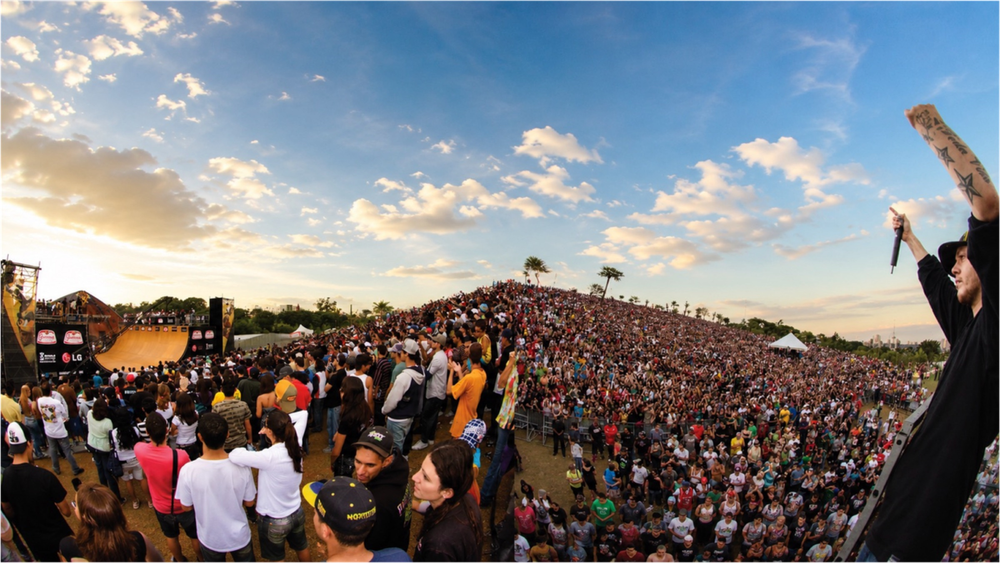
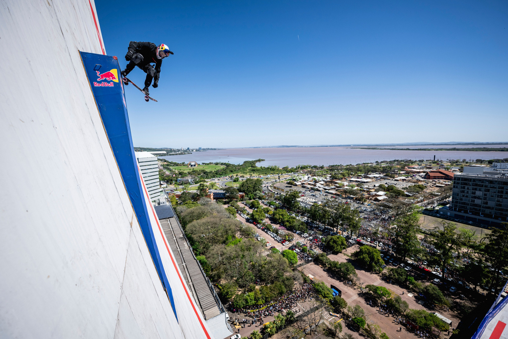

You makethe difference.
Há mais de 26 anos transformando ideias em experiências que entram para a história.
Somos especializados em conectar marcas e pessoas através da técnica, arte e ciência, explorando todos os sentidos do ser humano para gerar ações inesquecíveis.

Do skate para o mundo.
A YOUP nasceu em 2000 e, em 2003, incorporou a produção de eventos ao seu DNA. Em 2006 criou o Dia D, festival de skate e música que reuniu multidões em três edições. [A CONFIRMAR]

Cenários que ninguém imaginava.
Trouxemos o X Games para o Brasil, colocamos motocross freestyle diante do Congresso Nacional e montamos uma vert ramp em frente à Estação da Luz. Sempre ao vivo, sempre para milhares de pessoas.

Recordes mundiais.
Em 2025, o Red Bull Building Drop com Sandro Dias conquistou dois Guinness World Records™: o maior drop e a maior mega rampa do mundo. You imagine. We create.
Do briefing
ao impossível
Há 26 anos transformando ideias em experiências que entram pra história.